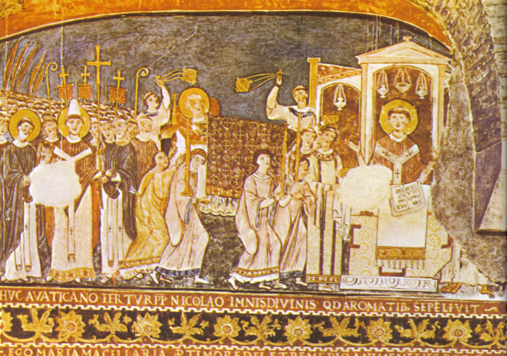
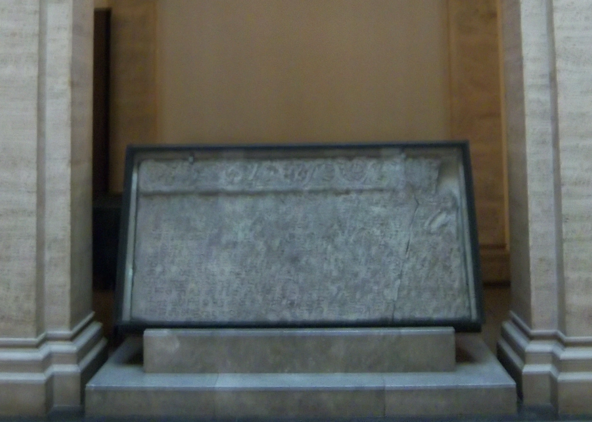

아직 펼치지 않은 카드
아직 펼치지 않은 카드
862년, 모라비아의 라스티슬라프 공이 “우리 말로 참된 믿음을 풀어 줄 스승”을 보내 달라고 청했어요. 테살로니키에서 나고 자란 형제 콘스탄티노스(뒷날 수도자가 되며 받은 이름이 키릴로스예요)와 메토디오스는 새 글자로 쓴 책을 들고 길을 떠났어요. 지도 위에서 두 형제의 길을 한 구간씩 따라가 보세요.
두 형제가 새 글자로 쓴 책을 들고 먼 길을 떠났어. 지도에서 같이 따라가 보자!
검수 전 시안이에요(기준서 1판). 장면에는 「콘스탄티노스 전기」와 기관 자료에 있는 것만 옮겼고, 학자마다 다른 점은 그렇다고 밝혔어요. 지도는 이 안내서가 그렸어요. 상상은 ‘눈 감고 상상해 보기’에만 썼어요.
862년, 모라비아(지금의 체코·슬로바키아 일대)를 다스리던 라스티슬라프 공이 비잔티움 제국(콘스탄티노폴리스를 서울로 둔 동로마 제국)의 황제에게 사람을 보냈어요. 주교와 스승을 보내 달라며 이렇게 말했어요.

“우리에게는 우리 말로 참된 그리스도교 믿음을 풀어 줄 스승이 없습니다.”
「콘스탄티노스 전기」 속 라스티슬라프 공의 말(불가리아어 번역을 이 안내서가 옮김)
황제는 테살로니키에서 나고 자란 학자 콘스탄티노스를 불렀어요. 전기는 그가 기도하자 하느님이 글자를 보여 주셨고, 그는 곧바로 “태초에 말씀이 계시니라”(요한복음 1장 1절)부터 옮겨 적기 시작했다고 전해요.
그림은 그 글자로 쓴 「조그라프 복음서」에서 마가복음이 시작되는 쪽이에요. 형제가 글자를 만들고 한 세기 남짓 지나 쓴 책이에요.
“우리 말로 가르쳐 줄 선생님을 보내 주세요!” 그래서 두 형제는 글자부터 만들었어.
물어보기새 글자를 만든다면, 어떤 모양으로 만들고 싶어?
형제는 새 글자로 옮긴 책을 들고 모라비아로 갔어요. 40달을 머문 뒤에는 제자들을 사제로 세우려고 다시 길을 떠났어요.
‘다음 곳으로’를 눌러 두 형제의 길을 한 구간씩 따라가 보세요.
‘다음 곳으로’를 눌러 두 형제의 길을 따라가 보세요.
 테살로니키콘스탄티노폴리스모라비아판노니아베네치아로마
테살로니키콘스탄티노폴리스모라비아판노니아베네치아로마이 안내서가 그린 지도. 땅과 강은 Natural Earth 자료로 그렸고, 모라비아와 판노니아의 점은 그 지역을 어림한 자리예요 · 이 안내서가 그린 지도 · Natural Earth(퍼블릭 도메인) 바탕
로마에 닿았어요. 곧 베드로 성당에서 슬라브 말로 미사를 드렸어요.
두 형제가 아주 먼 길을 갔어. 지도에서 같이 따라가 보자!
물어보기테살로니키에서 가장 먼 곳은 어디였을까?
로마 산 클레멘테 성당 아래층에는 11세기에 그린 벽화가 있어요. 교황이 성 클레멘스의 유해를 행렬로 성당까지 옮기는 장면이에요. 행렬은 왼쪽에서 오른쪽의 성당으로 나아가요. 교황 곁에서 무리를 이끄는 두 사람을 키릴로스와 메토디오스로 보는 설명도 있어요.
벽화 아래 글은 교황을 ‘니콜라오’라고 적었어요. 하지만 868년에 형제를 맞이한 교황은 하드리아누스 2세였어요.

슬라브 말로 쓴 책은 ‘구유’라 불리는 성모 마리아 성당(지금의 산타 마리아 마조레, 아기 예수의 구유 조각으로 전해지는 나무를 모신 곳)에 놓였고, 베드로 성당에서 슬라브 말로 미사를 드렸어요. 교황은 형제의 슬라브 말 예배를 공식으로 허락했어요.
콘스탄티노스는 로마에서 수도자가 되며 ‘키릴로스’라는 이름을 받았어요. 869년 2월 14일, 마흔두 살로 숨을 거두어 산 클레멘테 성당에 묻혔어요.
오래된 벽에 촛불과 십자가를 든 사람들의 행렬이 그려져 있어.
물어보기그림 속에서 십자가를 몇 개 찾을 수 있어?
글라골 문자는 크로아티아에서 오래 살아남았어요. 1100년 무렵 가로 2m쯤 되는 흰 석회암에 새긴 ‘바슈카 석판’에는 즈보니미르 왕이 성 루치아 성당에 땅을 내주었다는 이야기가 있어요.
“나 드르지하 수도원장이 이 땅에 대해 적었다”, “나 도브로비트 수도원장이 아홉 수도자 형제와 함께 이 성당을 지었다”라는 줄도 있어요(학술원의 영어 번역을 이 안내서가 옮김). 크로아티아라는 이름이 크로아티아 말로 처음 나오는 글이에요.

돌은 본디 유란드보르의 성 루치아 성당에서 제단 앞을 가르던 낮은 칸막이의 왼쪽 판이었어요. 1851년 신학생 페타르 도르치치가 그 값어치를 처음 알렸어요. 1934년 8월 30일 크르크섬을 떠나 이튿날 자그레브에 닿았고, 지금은 크로아티아 학술원 건물에 있어요.
커다란 돌에 글라골 글자가 빼곡하게 새겨져 있어.
물어보기돌에 글자를 새긴다면 뭐라고 새기고 싶어?
눈 감고 상상해 보기
로마의 큰 성당 안, 촛불 냄새가 아직 남아 있어요. 처음 듣는 슬라브 말 노래가 돌기둥 사이로 울려요. 먼 북쪽 모라비아에서도 누군가 같은 글자로 같은 기도를 읽고 있을지 몰라요.
눈을 감아 봐. 커다란 성당에 촛불이 반짝이고, 처음 듣는 말로 노래가 들려.
누군가의 말로 다가가려고 내가 새로 배워야 할 ‘글자’는 무엇일까요?
키릴 문자로 된 글자를 본 적 있어? 어디서 봤어?
마음에 닿는 한 줄을 고르거나 직접 써 보세요. 한 줄을 남기면 이 자리의 도장이 찍혀요. 이 기기에만 저장돼요.
이야기를 보다 궁금해질 만한 것들이에요. 답을 읽거나 짧은 영화로 보세요.
아직 펼치지 않은 이야기예요. 누르면 이야기가 펼쳐지고 색이 돌아와요. 더 알고 싶으면 근거를 따라가 보세요.
다 펼치면, 다음에 오실 때 새 이야기가 찾아와요.
오늘의 뒷이야기는 여기까지예요. 다음에 오시면 새 이야기가 기다리고 있어요.
펼친 뒷이야기 · 누르면 다시 볼 수 있어요
벽화 속 교황 산 클레멘테 벽화의 글은 교황을 ‘니콜라오’라고 적었지만, 868년에 유해를 맞이한 교황은 하드리아누스 2세였어요.
벽화 속 사람들 성당 안내는 이 벽화를 ‘교황이 유해를 행렬로 옮기는 장면’으로 소개해요. 행렬 앞의 두 사람을 키릴로스와 메토디오스로 보는 설명(NASSCAL)이 있고, 성당 누리집도 교황 곁에서 무리를 이끄는 두 사람을 형제로 소개해요.
몇 살이었나 전기는 콘스탄티노스가 마흔두 살에 세상을 떠났다고 적어요. 태어난 해는 자료마다 조금씩 달라요.
메토디오스가 숨진 해 「메토디오스 전기」는 885년, 브리태니커는 884년 4월 6일로 적어요.
벽화 아래 이름 그림 속 글씨는 ‘MACELLARIA’로 보이고, 성당 누리집은 ‘Marcellaria’로 적어요.
지도의 점 모라비아와 판노니아는 넓은 지역이라, 지도의 점은 그 지역을 어림한 자리예요.
말씀은 뜻만 옮기고, 본문은 대한성서공회 개역개정으로 이어 드려요.
요한복음 1장 1절 콘스탄티노스가 새 글자로 맨 먼저 옮겼다고 전하는 말씀이에요.
이사야 35장 5절 전기가 모라비아에서 일어난 일을 빗댄 말씀이에요(귀먹은 이의 귀가 열림).
시편 150편 6절 베네치아에서 콘스탄티노스가 든 말씀(숨 쉬는 모든 것이 주를 찬양함).
고린도전서 14장 베네치아에서 콘스탄티노스가 든 바울의 편지예요.
확인한 날 · 2026년 11월 18일 · 바뀌기 쉬운 정보라 정기적으로 다시 확인해요
로마 산 클레멘테 성당에는 키릴로스를 기리는 경당이 있고, 아래층에 이 벽화가 있어요.
바슈카 석판은 자그레브의 크로아티아 학술원 건물에 있어요. 볼 수 있는 때는 학술원에 미리 물어보세요.
테살로니키에서 로마까지 길을 끝까지 따라가면 카드에 금박이 입혀져요.
아이와 함께 ‘영화처럼 보기’를 끝까지 보면 카드가 채색돼요.
‘처음 만나는 기독교 문화’의 깊은 카드예요. 카드 단계와 남긴 글은 이 기기에만 저장돼요.
영화처럼 보기 · 약 3분
화면을 누르거나 → 키를 누르면 넘어가요. 그냥 두어도 자막이 저절로 넘어가요.